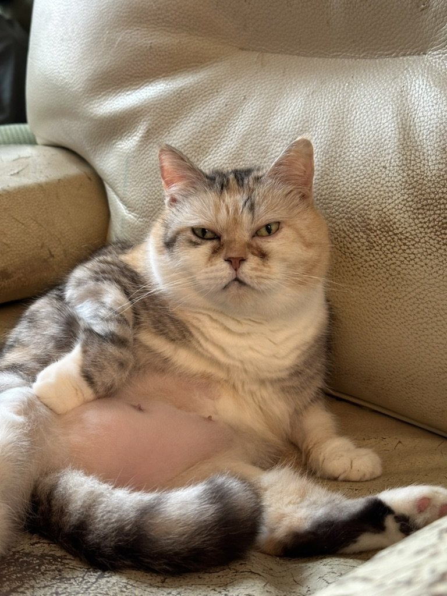

Researcher at SINOTECH ENGINEERING CONSULTANTS, INC. in Taiwan. My work focuses on railway safety, safety management systems, and construction safety near railways.
Contact: allenlin@sinotech.org.tw
This is my cat HuaHua.
